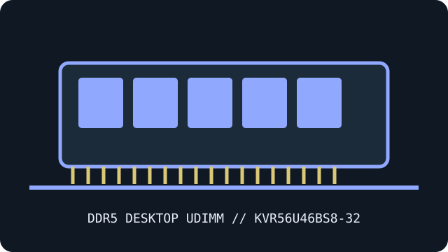

[ MANUFACTURER MODEL // MEMORY / RAM ]
Kingston ValueRAM KVR56U46BS8-32
A specific desktop DDR5 UDIMM module identified by manufacturer part number KVR56U46BS8-32. The record describes the quoted SKU and does not imply that similarly named products share its SPD, timing, or revision.

EXACT ID: Kingston KVR56U46BS8-32. Capacity is 32 GB module (1 × 32 GB); do not confuse the kit total with the per-module capacity. Verify the physical label, full suffix, SPD and revision before service or compatibility decisions.
Model specifications
| Manufacturer / exact part number | Kingston KVR56U46BS8-32 |
|---|---|
| Module / ECC class | Single-module 288-pin desktop DDR5 UDIMM; unbuffered, non-ECC |
| Capacity and data rate | 32 GB module (1 × 32 GB); DDR5-5600 (PC5-44800) |
| Rated primary timing | CL46-45-45 (JEDEC) |
| Operating voltage | 1.10 V nominal |
| Rank / organization | 1Rx8 per Kingston part-number/datasheet specification. Unbuffered, non-ECC UDIMM. |
| XMP / EXPO | JEDEC SPD; no XMP or EXPO profile listed for this SKU |
| Compatibility | Single 288-pin DDR5 desktop UDIMM for hosts supporting a 32 GB 1Rx8 module and up to 5600 MT/s. Confirm CPU controller, motherboard QVL, BIOS and slot population. It is unbuffered non-ECC system memory; on-die ECC is not system-level ECC. |
Compatibility, service & archive notes
- Single 288-pin DDR5 desktop UDIMM for hosts supporting a 32 GB 1Rx8 module and up to 5600 MT/s. Confirm CPU controller, motherboard QVL, BIOS and slot population. It is unbuffered non-ECC system memory; on-die ECC is not system-level ECC.
- Check the motherboard QVL and service manual, CPU memory-controller generation, BIOS version, DIMM density, slot population and supported ranks before installation. The rated profile is not guaranteed on every platform; a host may select a lower SPD rate.
- This is a DDR5 288-pin desktop UDIMM, not a SO-DIMM, RDIMM or LRDIMM. DDR5 module generations and buffering classes are not interchangeable even where connectors appear similar.
- DDR5 on-die ECC is internal error correction and is not system-level ECC reporting. This SKU is recorded as non-ECC; system ECC requires an ECC-capable module and compatible CPU, board wiring and firmware.
- Power down and follow the host service procedure, use ESD controls, handle the module by its edges, and do not force a keyed DIMM. For archival verification, retain a label photograph and read-only SPD dump with the host, BIOS, slot and test results.
Manufacturer & standards references
- Kingston exact KVR56U46BS8-32 datasheetManufacturer source for the product identity and published model information; consult the full part-number listing and revision.
- Kingston exact part compatibility searchSecond official manufacturer reference for its DDR5 memory product range and compatibility context.
- JEDEC JESD79-5 — DDR5 SDRAMDDR5 interface and generation context; it does not establish a particular system’s module qualification or overclock support.
Manufacturer specifications may change by revision. Use the exact label and SPD of the installed module and the platform maker’s QVL for final validation.